LOADING, SEGMENTING, AND OPERATING ON A WORM FILE
An example script with annotations
Contents
- LOADING FILES FROM DISK
- STITCH TRACKS
- CLEAN UP TRACKS
- Segmenting Tracks
- Statistics of Runs and Reorientations
- make a histogram of heading angle for all time
- make a histogram of heading angle only in runs
- mark the probability of reorientation vs. heading angle
- make a scatter plot of angle change vs. starting angle
- autocorrelate path direction
- autocorrelate change in heading over time
- a cross correlation
- test on random noise
LOADING FILES FROM DISK
loading specific files by name
basedir = '\\labnas1\Share\David\Extracted\Spatial\N2\18-23GradientC15\OutputFiles\'; d = dir([basedir '*.bin']); nfiles = 5; for j = 1:nfiles fnames{j} = [basedir d(j).name]; end %fnames = {[basedir '20090226_N2g15_1823_tracks.bin'], [basedir '20090226_w1a_N2g15_1823_tracks.bin']}; % load any track longer than 50 points minpts = 50; % this code snippet loads the files if we haven't already loaded them, but % otherwise skips them; that way we can change the script and rerun it % without having to reload the files if (~exist('cryo', 'var')) cryo = ExperimentSet.fromFiles(fnames{:}, 'minpts', minpts); end
Loading file #1 code = 20101 adding timing information Elapsed time is 18.557986 seconds. Loading file #2 code = 20101 adding timing information Elapsed time is 25.407170 seconds. Loading file #3 code = 20101 adding timing information Elapsed time is 19.171698 seconds. Loading file #4 code = 20101 adding timing information Elapsed time is 18.953077 seconds. Loading file #5 code = 20101 adding timing information Elapsed time is 12.020628 seconds.
STITCH TRACKS
sometimes we miss a frame, so let's stitch together tracks that are close by
frameDiff = 3; % stitch together tracks if first ended 3 or fewer frames before second started maxDist = 7; % stitch together tracks if first ended within 7 pixels of second's start % For the script, I am executing this function with interactive off, but if % you set interactive to true, it will show you each potential stitch and % let you decide whether or not to stitch it cryo.executeExperimentFunction('stitchTracks', frameDiff, maxDist, 'interactive', false);
merged 18 tracks merged 4 tracks merged 2 tracks merged 6 tracks merged 21 tracks
CLEAN UP TRACKS
get rid of any tracks that don't go anywhere
% create an EsetCleaner object ecl = ESetCleaner(); % now let's look at the autogenerated report ecl.getReport(cryo); % the following code just forces the figures to appear in the example documentation for j = 1:3 figure(j); snapnow; end % let's get rid of all tracks less than 750 points and speed less than 0.4 % pixels per second ecl.minPts = 750; ecl.minSpeed = 0.4; % we've already shown the report, so we don't need to have it ask us first, % for the purposes of this script; generally a good idea to leave this % enabled ecl.askFirst = false; ecl.clean(cryo);
0/188 tracks fail speed test 0/188 tracks fail displacement test 0/188 tracks fail npts test 0/188 tracks fail at least one test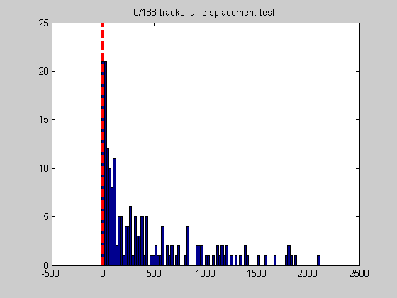 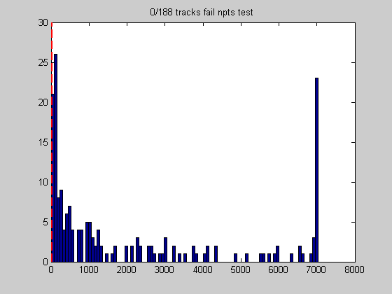 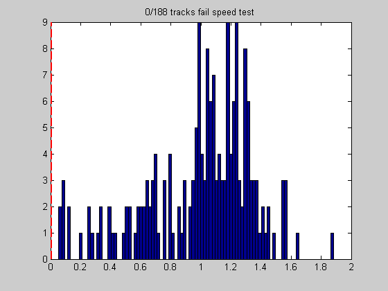
Segmenting Tracks
separate tracks into runs and reorientations
% the default segmentation options are pretty good WormSegmentOptions % but just for the heck of it, let's change the minimum run time wso = WormSegmentOptions; wso.minRunTime = 3; % seconds % segment the tracks cryo.executeExperimentFunction('segmentTracks', wso); % pick a track and plot the segmentation clf; cryo.expt(1).track(1).plotSegmentation(); snapnow;
ans =
WormSegmentOptions
Properties:
dthetaThresh: 0.2618
joinSTpts: 3
ptBuffer: 3
alignedTheta: 0.3491
minRunTime: 5
straightThetaThresh: 0.0524
Warning: Could not find an exact (case-sensitive) match for 'nthColor'.
c:\matlab track analysis\basic routines\nthcolor.m is a case-insensitive match and will be used
instead.
You can improve the performance of your code by using exact
name matches and we therefore recommend that you update your
usage accordingly. Alternatively, you can disable this warning using
warning('off','MATLAB:dispatcher:InexactCaseMatch').
This warning will become an error in future releases.
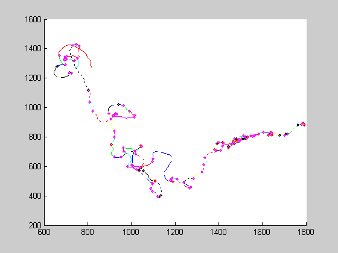 Statistics of Runs and Reorientations
some elementary things to do
% descriptions of all these functions are found by typing % doc ExperimentSet cryo.defaultTitle = 'Cryophillic Navigation'; close all; thetaAxis = deg2rad(0:30:330);
make a histogram of heading angle for all time
cryo.makeHistogram('theta', thetaAxis, 'polar', true, 'r2d', true); snapnow;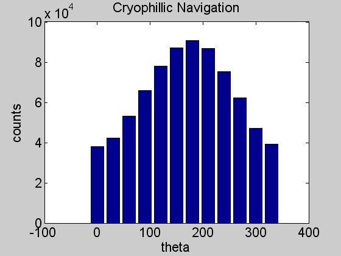
make a histogram of heading angle only in runs
clf; cryo.makeHistogram('theta', thetaAxis, 'runs','polar', true, 'r2d', true); snapnow;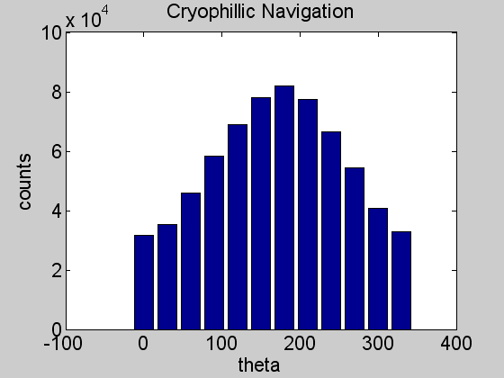
mark the probability of reorientation vs. heading angle
clf; cryo.makeReorientationHistogram('theta', thetaAxis, 'polar', true, 'r2d', true); snapnow;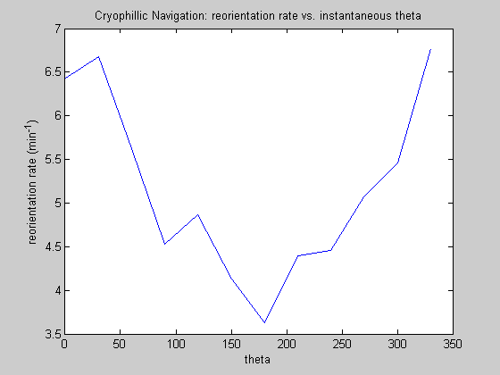
make a scatter plot of angle change vs. starting angle
and overlay the mean
runstart = cryo.gatherSubField('run', 'startTheta'); runend = cryo.gatherSubField('run', 'endTheta'); dt = diff(unwrap([runstart;runend])); % convert to degrees between 0 & 360 runstart = mod(rad2deg(runstart), 360); % convert to degrees; dt = rad2deg(dt); [rs, meanchange, stderrchange] = meanyvsx(runstart, dt, 0:30:360); clf; plot (runstart, dt, 'k.'); hold on errorbar(rs, meanchange, stderrchange, 'r', 'LineWidth', 2); hold off snapnow;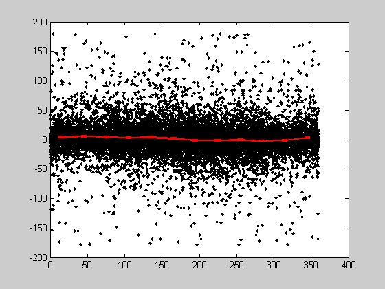
autocorrelate path direction
% the withinRuns flag means to only correlate within a run, but not between % runs [ac, np, tx] = cryo.autocorrelate('vnorm'); [acr, npr, txr] = cryo.autocorrelate('vnorm','withinRuns',true); clf semilogy(tx(ac>0), ac(ac>0)./np(ac>0), 'b.',txr(acr>0), acr(acr>0)./npr(acr>0),'g.'); xlim([0 600]); xlabel ('$\tau$ (s)','Interpreter', 'Latex'); ylabel('$\langle\hat{v}(t)\cdot\hat{v}(t + \tau)\rangle$','Interpreter','Latex'); title ('Auto-Correlation of velocity direction'); legend('over whole track', 'within runs'); ylim([0.01 1]) snapnow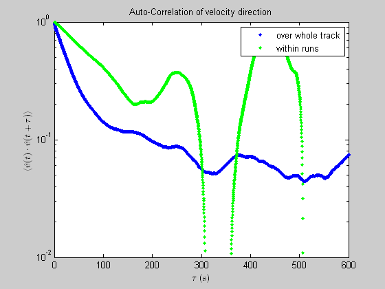
autocorrelate change in heading over time
[ac, np, tx] = cryo.autocorrelate('deltatheta','withinRuns',true); plot(tx, ac./np); xlim([0 100]) xlabel ('$\tau$ (s)','Interpreter', 'Latex'); ylabel('$\langle\dot{\theta}(t)\ast\dot{\theta}(t + \tau)\rangle$','Interpreter','Latex'); title ('Auto-Correlation of heading angle change'); snapnow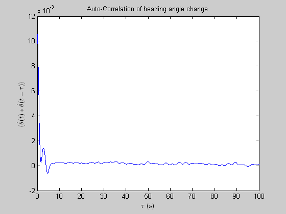
a cross correlation
a result of how we're differentiating, or something fundamental?
[xc, np, tx] = cryo.crosscorrelate('deltatheta', 'ddtheta', 'withinRuns', true); plot (tx, xc./np); xlim([-50 50]) xlabel ('$\tau$ (s)','Interpreter', 'Latex'); ylabel('$\langle\ddot{\theta}(t)\ast\dot{\theta}(t + \tau)\rangle$','Interpreter','Latex'); title ('Cross correlation of first and second derivatives of heading'); snapnow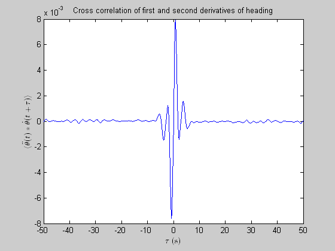
test on random noise
t = cryo.expt(1).track(1); t.dq.randomcrap = randn(size(t.dq.eti)); t.dq.srandomcrap = lowpass1D(t.dq.randomcrap, t.dr.smoothTime/t.dr.interpTime); t.dq.dsrandomcrap = deriv(t.dq.srandomcrap, t.dr.derivTime/t.dr.interpTime); [xccrap,npcrap,txcrap] = t.crosscorrelate('srandomcrap', 'dsrandomcrap'); dgc = -conv(gausskernel(t.dr.smoothTime/t.dr.interpTime), dgausskernel(t.dr.derivTime/t.dr.interpTime),'same'); dgc = dgc*max(xccrap(round(length(xccrap)/2) + [-100:100])./npcrap(round(length(xccrap)/2) + [-100:100]))/max(dgc); myt = (1:length(dgc))*t.dr.derivTime; myt = myt - mean(myt); plot (tx, xc./np,txcrap,xccrap./npcrap,myt,dgc); xlim([-50 50])
Warning: Could not find an exact (case-sensitive) match for 'gausskernel'.
c:\matlab track analysis\basic routines\gaussKernel.m is a case-insensitive match and will be
used instead.
You can improve the performance of your code by using exact
name matches and we therefore recommend that you update your
usage accordingly. Alternatively, you can disable this warning using
warning('off','MATLAB:dispatcher:InexactCaseMatch').
This warning will become an error in future releases.
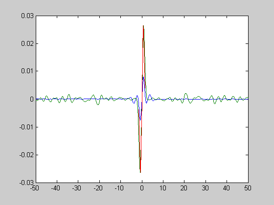